전자기사 (2004-03-07 기출문제)
1과목: 전기자기학
1. 미분방정식 형태로 나타낸 멕스웰의 전자계 기초 방정식은?
- rot E =
 , rot H =
, rot H = 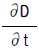
, div D =0, div B =0 - rot E =
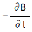
, rot H =i +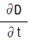
, div D =ρ, div B =H - rot E =
 , rot H =i +
, rot H =i +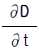
, div D =ρ, div B =0 - rot E =
 , rot H =i , div D =0, div B =0
, rot H =i , div D =0, div B =0
(정답률: 알수없음)

2. 액체 유전체를 포함한 콘덴서 용량이 C[F]인 것에 V[V]의 전압을 가했을 경우에 흐르는 누설전류는 몇 A 인가? (단, 유전체의 비유전률은 εs이며, 고유저항은 ρ[Ω.m] 라 한다.)
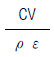
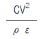
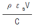
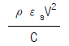
(정답률: 알수없음)
3. 무한장 솔레노이드에 전류가 흐를 때 발생되는 자장에 관한 설명 중 옳은 것은?
- 내부 자장은 평등자장이다.
- 외부와 내부의 자장의 세기는 같다.
- 외부 자장은 평등자장이다.
- 내부 자장의 세기는 0 이다.
(정답률: 알수없음)
4. 자속밀도가 0.3Wb/m2인 평등자계내에 5A의 전류가 흐르고 있는 길이 2m인 직선도체를 자계의 방향에 대하여 60도의 각도로 놓았을 때 이 도체가 받는 힘은 약 몇 N 인가?
- 1.3
- 2.6
- 4.7
- 5.2
(정답률: 알수없음)
5. 비투자율이 500인 철심을 이용한 환상 솔레노이드에서 철심속의 자계의 세기가 200A/m일 때 철심속의 자속밀도 B[T]와 자화율 X[H/m]는 약 얼마인가?
- B=π×10-2 , X=3.2×10-4
- B=π×10-2 , X=6.3×10-4
- B=4π×10-2 , X=6.3×10-4
- B=4π×10-2 , X=12.6×10-4
(정답률: 알수없음)
6. 정전계내에 있는 도체 표면에서의 전계의 방향은 어떻게 되는가?
- 임의 방향
- 표면과 접선방향
- 표면과 45도 방향
- 표면과 수직방향
(정답률: 알수없음)
7. 한변의 저항이 Ro 인 그림과 같은 무한히 긴 회로에서 AB간의 합성저항은 어떻게 되는가?
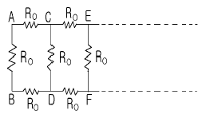
- (√2-1)Ro
- (√3-1)Ro
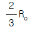
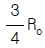
(정답률: 알수없음)
8. 정전용량이 1μF인 공기콘덴서가 있다. 이 콘덴서 판간의 1/2인 두께를 갖고 비유전률 εr=2인 유전체를 그 콘덴서의 한 전극면에 접촉하여 넣었을 때 전체의 정전용량은 몇 μF 가 되는가?
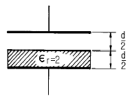
- 2
- 1/2
- 4/3
- 5/3
(정답률: 알수없음)
9. 균일한 자속 밀도 B 중에 자기 모멘트 m 의 자석(관성 모멘트 I)이 있다. 이 자석을 미소 진동 시켰을 때의 주기는 얼마인가?
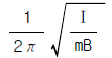
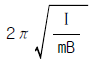
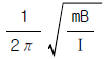
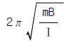
(정답률: 알수없음)
10. 임의의 단면을 가진 2개의 원주상의 무한히 긴 평행도체가 있다. 지금 도체의 도전률을 무한대라고 하면 C, L, ε 및 μ사이의 관계는? (단, C는 두 도체간의 단위길이당 정전용량, L은 두 도체를 한개의 왕복회로로 한 경우의 단위길이당 자기인덕턴스, ε은 두 도체사이에 있는 매질의 유전률, μ는 두 도체사이에 있는 매질의 투자율이다.)
- Cε= Lμ
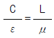
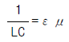
- LC =εμ
(정답률: 알수없음)
11. 30V/m의 전계내 50V 되는 점에서 1C 의 전하를 전계 방향으로 70㎝ 이동한 경우, 그 점의 전위는 몇 V 인가?
- 21
- 29
- 35
- 65
(정답률: 알수없음)
12. 환상 철심에 권수 NA인 A코일과 권수 NB인 B코일이 있을 때 코일 A의 자기인덕턴스가 LA[H]라면 두 코일간의 상호인덕턴스는 몇 H 인가? (단, A코일과 B코일간의 누설자속은 없는 것으로 한다.)
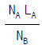
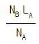
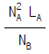
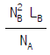
(정답률: 알수없음)
13. Ω·sec와 같은 단위는?
- H
- H/m
- F
- F/m
(정답률: 알수없음)
14. 자계분포 H =xy j -xz k [A/m]를 발생시키는 점(1,1,1)[m] 에서의 전류밀도는 몇 A/m2인가?
- 2
- 3
- √2
- √3
(정답률: 알수없음)
15. 전력용 유입 커패시터가 있다. 유(기름)의 비유전률이 2 이고 인가된 전계 E =200sinωt a x[V/m]일 때 커패시터 내부에서의 변위 전류밀도는 몇 A/m2 인가?
- 400ω cosωt ax
- 400 sinωt ax
- 200ω cosωt ax
- 400ω sinωt ax
(정답률: 알수없음)
16. 매질 1 이 나일론 (비유전율 εs = 4)이고, 매질 2가 진공일 때 전속밀도 D가 경계면에서 각각 θ1, θ2 의 각을 이룰 때 θ2=30° 라 하면 θ1의 값은?
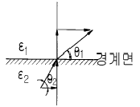
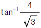
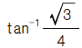
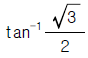
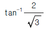
(정답률: 알수없음)
17. 다음 중 옳은 것은?
- grad V 는 전계방향으로 향하는 전위의 변화율이다.
- curl curl H = grad div H - ∇2 H 의 벡터 항등식은 멕스웰 전자 방정식을 이용하여 전신 방정식(telegraphic equation)을 유도하는데 필요하다.
- div E 는 폐곡면의 단위 면적당의 전기력선의 발산량이다.
- curl H (=∇×H )는 rot H 와 같은 것이며 자계내의 1 Wb가 이동하여 만든 폐로면내 단위 길이당의 선적 분이다.
(정답률: 알수없음)
18. 전류가 흐르는 도선을 자계안에 놓으면, 이 도선에 힘이 작용한다. 평등자계의 진공 중에 놓여 있는 직선 전류 도선이 받는 힘에 대하여 옳은 것은?
- 전류의 세기에 반비례한다.
- 도선의 길이에 비례한다.
- 자계의 세기에 반비례한다.
- 전류와 자계의 방향이 이루는 각의 탄젠트 각에 비례한다.
(정답률: 알수없음)
19. 패러데이 관(Faraday 管)에 대한 설명 중 틀린 것은?
- 패러데이관내의 전속선 수는 일정하다.
- 진전하가 없는 점에서는 패러데이관은 불연속적이다.
- 패러데이관의 밀도는 전속밀도와 같다.
- 패러데이관 양단에 정(正), 부(負)의 단위 전하가 있다.
(정답률: 알수없음)
20. 유전율이 다른 두 유전체의 경계면에 작용하는 힘은? (단, 유전체의 경계면과 전계방향은 수직이다.)
- 유전율의 차이에 비례
- 유전율의 차이에 반비례
- 경계면의 전계의 세기의 제곱에 비례
- 경계면의 전하밀도의 제곱에 비례
(정답률: 알수없음)
2과목: 회로이론
21. te-at에 대한 라플라스 변환을 구하면?
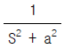
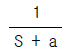
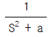
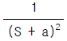
(정답률: 알수없음)
22. 그림과 같은 회로에서 스위치 K가 닫혀진 상태에 있다가 t = 0 일 때 K가 열렸다. 이 때 R2를 흐르는 전류 i는?
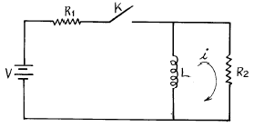
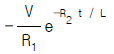
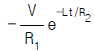
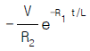
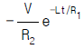
(정답률: 알수없음)
23. 그림과 같은 결합 공진회로에 있어서 C1과 C2를 조정하여 두 폐회로가 모두 공진 상태에 있을 때 결합계수를 변화 시킨다면 i2가 최대로 되는 상태는 언제인가?
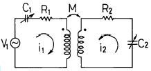
- 밀결합될 때
- 소결합될 때
- 임계결합될 때
- 같은 방향으로 결합될 때
(정답률: 알수없음)
24. R-L-C 직렬회로에서 자유 진동 주파수는?
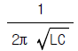
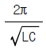
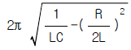
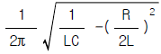
(정답률: 알수없음)
25. 그림과 같은 회로에서 단자 1, 2간의 인덕턴스 L은?
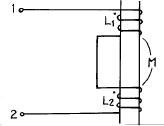
- L1+L2
- L1+L2-2M
- L1+L2+2M
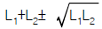
(정답률: 알수없음)
26. 그림과 같은 단일 구형파의 라플라스 변환은?
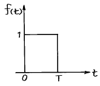
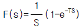
- F(s)=S(1-e-TS)
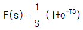
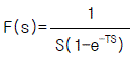
(정답률: 알수없음)
27. 다음 그림에서i1=16[A],i2=22[A],i3=18[A], i4=27[A]일 때 i5는?
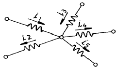
- -7 [A]
- -15 [A]
- 3 [A]
- 7 [A]
(정답률: 알수없음)
28. R - L직렬회로에 단위 임펄스를 가할 때 흐르는 전류 즉, 임펄스 응답을 가장 잘 나타낸 파형은?
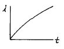
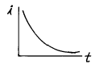
(정답률: 알수없음)
29. 임의의 회로의 실효 전력이 30W 이고, 무효전력이 40VAR 일 때 역률은?
- 0.6
- 0.8
- 1.0
- 1.2
(정답률: 알수없음)
30. 그림의 회로에서 R=2[Ω], C=0.5[F], Vs(t)=6e-2t 인 경우 회로의 임피던스[Ω]는?
- 2/4.5
- -2
- 2ω/(4 + 0.5ω)
- 2
(정답률: 알수없음)
31. 어떤 회로에서 콘덴서의 캐패시턴스가 2.12[㎌]일 때, 주파수가 100[Hz], 전압 200[V]를 인가 했다면, 이 때 콘덴서의 용량성 리액턴스 XL의 값은?
- 320
- 750
- 830
- 910
(정답률: 알수없음)
32. R-L 직렬회로에 υ (t)=100sin(104t+Q1)[V]의 전압을 가할 때 i(t)=20sin(104t +Q2)[A]의 전류가 흘렀다. R=30[Ω]일 때 인덕턴스 L의 값은?
- L=4[mH]
- L=40[mH]
- L=0.4[mH]
- L=0.04[mH]
(정답률: 알수없음)
33. 다음 회로에서 특성 임피던스 Zo는?
- 2 Ω
- 3 Ω
- 4 Ω
- 5 Ω
(정답률: 알수없음)
34. 콘덴서 C에 단위 임펄스의 전류원을 접속하여 동작시키면 콘덴서의 전압 Vc(t)는?
- Vc(t)=C
- Vc(t)=Cu(t)
(정답률: 알수없음)
35. RC 저역 필터회로에서 일 때 위상각은?
- 0°
- +45°
- -45°
- +90°
(정답률: 알수없음)
36. 그림과 같은 회로망 N에서 포트 2를 개방했을 때의 전압이득 G12를 임피던스 파라미터로 나타내면?
(정답률: 알수없음)
37. RLC 직렬회로에 대하여, 임의 주파수를 인가 하였을 때 회로의 특성이 공진 회로의 특성으로 나타났다. 동일한 이 회로에 대하여 주파수를 증가시켰을 때, 주파수에 따른 회로의 특성은?
- 유도성 회로의 특성으로 나타난다.
- 용량성 회로의 특성으로 나타난다.
- 저항성 회로의 특성으로 나타난다.
- 공진 회로의 특성으로 나타난다.
(정답률: 알수없음)
38. 그림은 반파정류에서 얻은 파형이다. 이 전류의 실효치 (rms)는?
- 2Ｉm
- √2Ｉm
(정답률: 알수없음)
39. 2개의 4단자망을 직렬로 접속했을 때 성립하는 식은?
- Z=Z1+Z2
- Z=Z1Z2
- Y=Y1+Y2
- Z=Y1+Y2
(정답률: 알수없음)
40. 그림과 같은 그래프에서 컷셋(cut-set)을 나타내는 것은?
- {1,2,3}
- {1,4,5}
- {1,3,4}
- {1,2,3,4}
(정답률: 알수없음)
3과목: 전자회로
41. Negative feedback 회로에 대한 설명으로 옳지 않은 것은?
- 이득 감소
- sensitivity 감소
- 대역폭 감소
- 잡음 감소
(정답률: 알수없음)
42. 궤환증폭회로에서 전압증폭도 라 할 때 부궤환의 조건은?(단, A는 부궤환시의 증폭도이다.)
- |1 - Aβ|＜ 1
- Aβ = ∞
- Aβ = 1
- |1 - Aβ|＞1
(정답률: 알수없음)
43. α 차단주파수에 관한 사항으로 옳지 않은 것은?
- α 가 원래값의 0.7배가 되는 곳의 주파수이다.
- Base 주행 시간에 반비례한다.
- Base 폭의 자승에 반비례한다.
- 확산 정수에 반비례한다.
(정답률: 알수없음)
44. 증폭 회로의 고주파 응답을 결정하는 요소는?
- 이득-대역폭적
- 롤-오프(Roll-Off)
- 바이패스 커패시턴스
- 트랜지스터의 내부 커패시턴스
(정답률: 알수없음)
45. 다음 회로는 무엇인가?
- 2진수를 그레이코드로 변환하는 회로
- 2진수를 3초과 코드로 변환하는 회로
- 그레이코드를 2진수로 변환하는 회로
- 3초과 코드를 2진수로 변환하는 회로
(정답률: 알수없음)
46. 다음 그림은 무엇을 위한 회로인가?
- 저역통과 여파기
- 고역통과 여파기
- AC - DC 변환기
- 시미트 트리거
(정답률: 알수없음)
47. 저주파 증폭기의 직류 입력은 2[kV], 400[mA]이고 효율은 80[%]로 보면 부하에서 나타나는 전력은?
- 640[W]
- 600[W]
- 480[W]
- 320[W]
(정답률: 알수없음)
48. 논리 회로의 출력 X는?
- AB
- A
- B
(정답률: 알수없음)
49. 음귀환에 의한 입曺출력 임피던스 변화의 설명 중 옳은 것은?
- 직렬-전압 귀환 회로의 출력 임피던스는 증가한다.
- 직렬-전류 귀환 회로의 입력 임피던스는 감소한다.
- 병렬-전압 귀환 회로의 출력 임피던스는 증가한다.
- 병렬-전류 귀환 회로의 입력 임피던스는 감소한다.
(정답률: 알수없음)
50. 0 바이어스(zero bias)로 된 B급 푸시풀 증폭기에서 일어나기 쉬운 중력 파형의 일그러짐 현상을 무엇이라고 하는가?
- 주파수 일그러짐
- 진폭 일그러짐
- 교차 일그러짐
- 위상 일그러짐
(정답률: 알수없음)
51. 그림과 같은 논리회로의 출력은?
- Y = AB
(정답률: 알수없음)
52. 부궤환 증폭기의 특징 중 옳지 않은 것은?
- 증폭도가 증가한다.
- 주파수 특성이 좋다.
- 일그러짐과 잡음이 감소한다.
- 부하 변동에 의한 이득 변동이 감소한다.
(정답률: 알수없음)
53. 다음과 같은 comparator 회로에서 입력에 정현파를 인가하면 출력파형은?
- 구형파형
- 정현파형
- 톱니파형
- ramp 파형
(정답률: 알수없음)
54. 턴-오프 시간(turn-off time)은?
- 축적시간과 하강시간의 합이다.
- 상승시간과 지연시간의 합이다.
- 상승시간과 축적시간의 합이다.
- 상승시간과 하강시간의 합이다.
(정답률: 알수없음)
55. 반파 정류된 파형의 평균 값은? (단, 입력 전압은 VPsinθ 이다.)
(정답률: 알수없음)
56. 불 대수식 (A+B)ㆍ(A+C)와 등가인 것은?
- BㆍC
- AㆍBㆍC
- A+B+C
- A+BㆍC
(정답률: 알수없음)
57. 다음 회로 Qn = 0인 상태에서 S=1, R=0이 가해지면 그 직후의 출력은?
- Q = 1,
 = 0
= 0 - Q = 0,
 = 1
= 1 - Q = 1, = 1
- Q = 0,
 = 0
= 0
(정답률: 알수없음)
58. 다음 회로에서VCE = 6.5[V]가 되기 위한 Rb값으로 가장 적당한 것은?(단, 여기서 VBE=0.7[V], β =100 이다.)
- 약 129 [㏀]
- 약 275 [㏀]
- 약 320 [㏀]
- 약 421 [㏀]
(정답률: 알수없음)
59. 다음 그림과 같은 이득이 Av인 연산 증폭회로에서 출력전압 Vo를 나타내는 것은?(단, V1, V2 및 V3는 입력 신호 전압이다.)
(정답률: 알수없음)
60. 미분기의 출력과 입력은 어떤 관계인가?
- 출력은 입력의 변화율에 반비례한다.
- 출력은 입력의 변화율에 비례한다.
- 출력은 입력의 변화율에 무관하다.
- 출력은 입력의 변화율의 제곱에 비례한다.
(정답률: 알수없음)
4과목: 물리전자공학
61. 제 4과목: 물리전자공학 Si P-N 다이오드에서의 cut-in 전압은 약 얼마인가?
- 0[V]
- 0.7[V]
- 7[V]
- 70[V]
(정답률: 알수없음)
62. PN접합의 역전압 의존성을 이용한 소자는?
- Tunnel 다이오드
- Zener 다이오드
- Varistor
- Varactor 다이오드
(정답률: 알수없음)
63. 정격 100[V], 50[W] 백열 전구의 필라멘트를 0.1[sec] 사이에 통과하는 전자수는? (단, 전자의 전하량 e=1.6×10-19[C])
- 3.125×1017[개/초]
- 6.24×1016[개/초]
- 62.4×1017[개/초]
- 3.125×1016[개/초]
(정답률: 알수없음)
64. PN 접합에 순방향 바이어스를 공급할 때 특징이 아닌것은?
- 전장이 약해진다.
- 전위장벽이 높아진다.
- 공간전하영역의 폭이 좁아진다.
- 다수캐리어에 의한 확산전류는 증대한다.
(정답률: 알수없음)
65. 0℃, 1기압(atm)에 대한 기체 분자 밀도는 약 얼마인가?(단, 볼츠만 상수 K=1.38×10-23[J/°K]이다.)
- 2.69×1025[m-3]
- 7.2×1025[m-3]
- 5.45×1020[m-3]
- 11.4×1022[m-3]
(정답률: 알수없음)
66. 파울리(Pauli)의 배타율 원리가 만족하는 분포 함수는?
- Schrodinger
- Maxwell-Boltzmann
- Fermi-Dirac
- Poisson
(정답률: 알수없음)
67. 확산 전류 밀도에 관계있는 것은?
- 농도의 기울기(gradient)에만 의존한다.
- 이동도에만 의존한다.
- 농도의 기울기와 이동도에 의존한다.
- 위의 가,나,다 모두 관계없다.
(정답률: 알수없음)
68. 어느 열음극의 일함수(work function)의 값이 1/2로 되면 열전자 전류밀도는 어떻게 되는가?
(정답률: 알수없음)
69. 부성 저항 특성을 나타내는 다이오드는?
- 터널 다이오드
- 바랙터
- 제너 다이오드
- 정류용 다이오드
(정답률: 알수없음)
70. 전류 제어용 소자는?
- 3극 진공관
- 접합 트랜지스터
- 접합 전계효과 트랜지스터
- 절연 게이트 전계효과 트랜지스터
(정답률: 알수없음)
71. "레이저란 원자가 ( ① )에너지 상태에서 ( ② )에너지 상태로 전이할 때 발생되는 ( ③ )방출이다." ( )안에 들어갈 옳은 표현은? (순서대로 ①, ②, ③)
- 낮은, 높은, 유도
- 높은, 낮은, 유도
- 낮은, 높은, 자연
- 높은, 낮은, 자연
(정답률: 알수없음)
72. 선형적인 증폭을 위해서 트랜지스터의 동작점은?
- 포화영역 부근에 세워져야 한다.
- 차단영역 부근에 세워져야 한다.
- 활성영역 부근에 세워지기만 하면 된다.
- 차단영역과 포화영역 중간 지점에 세워져야 한다.
(정답률: 알수없음)
73. 일반적인 드리프트 트랜지스터 장ㆍ단점에 대한 설명 중 그 내용이 가장 부적당한 것은?
- 컬렉터 용량이 감소한다.
- 이미터 효율이 적어진다.
- 이미터 용량이 증가한다.
- 컬렉터 항복 전압이 낮아진다.
(정답률: 알수없음)
74. 물질의 구성과 관계없는 입자는?
- 전자
- 중성자
- 양자
- 광자
(정답률: 알수없음)
75. Hall 계수에 의해서 구할 수 있는 사항을 가장 잘 표현한 것은?
- 캐리어의 종류만을 구할 수 있다.
- 캐리어 농도와 도전율을 알 수 있다.
- 캐리어 종류와 도전율을 구할 수 있다.
- 캐리어의 종류, 농도는 물론 도전율을 알 경우 이동도도 구할 수 있다.
(정답률: 알수없음)
76. 페르미 준위에 대한 설명으로 옳은 것은?
- 불순물의 양과 온도가 증가할수록 금지대의 중앙으로부터 멀어진다.
- 불순물의 양과 온도가 증가할수록 진성반도체의 페르미 준위에 가까워진다.
- 불순물의 양이 증가하면 금지대의 중앙으로부터 멀어지고, 온도가 증가하면 그와 반대이다.
- 불순물의 양이 증가하면 금지대의 중앙으로 가까워지고, 온도가 증가하면 그와 반대이다.
(정답률: 알수없음)
77. 균등자계 B내에 수직으로 속도 υ로 입사한 전자의 속도를 2배로 증가시켰을 때, 전자의 운동은 어떻게 변하는가?
- 원운동의 주기는 4배가 된다.
- 원운동의 각속도는 2배가 된다.
- 원운동의 주기는 변하지 않는다.
- 원운동의 반경은 변하지 않는다.
(정답률: 알수없음)
78. 정자계 내에서 자계와 평행한 방향으로 운동하는 하전체는?
- 원 운동을 한다.
- 나선 운동을 한다.
- 지그재그 운동을 한다.
- 상호 작용이 없다.
(정답률: 알수없음)
79. 열전자 방출 현상에서 전류와 일함수와의 관계를 나타낸 식은?
- Einstein의 관계식
- Langmuir - Child의 관계식
- richardson - dushmann의 관계식
- Schottky의 관계식
(정답률: 알수없음)
80. 트랜지스터의 제조에서 에피텍셜 층(epitaxial layer)이 많이 사용되는 이유는?
- 베이스 전극을 만들기 위해서
- 베이스 영역을 좁게 만들기 위해서
- 낮은 저항의 이미터 영역을 만들기 위해서
- 낮은 저항의 기판에 같은 도전성 형태를 가진 높은 저항의 컬렉터 영역을 만들기 위해서
(정답률: 알수없음)
5과목: 전자계산기일반
81. 스택(stack) 구조가 갖는 명령 형식은?
- 0-주소명령형식
- 1-주소명령형식
- 2-주소명령형식
- 3-주소명령형식
(정답률: 알수없음)
82. 레지스터(Register)의 설명 중 옳지 않은 것은?
- 누산기(accumulator)도 레지스터의 일종이다.
- CPU 내부에 있으며, 자료를 기억하는 기능을 가지고 있다.
- 레지스터 상호 간에 자료의 전달은 버스를 이용한다.
- 레지스터의 수가 많으면 컴퓨터의 효율이 떨어진다.
(정답률: 알수없음)
83. 명령(instruction)의 구성 부분이 될 수 없는 것은?
- operand
- operation code
- condition code
- address
(정답률: 알수없음)
84. 서브루틴의 리턴 어드레스를 저장하기 위한 데이터 구조는?
- STACK
- QUEUE
- Linked List
- Tree 구조
(정답률: 알수없음)
85. 다음 중 순서 논리 회로에 해당되는 것은?
- 부호기(encoder)
- 반가산기(half adder)
- 플립-플롭(flip-flop)
- 멀티플렉서(multiplexer)
(정답률: 알수없음)
86. 컴퓨터로 업무를 처리할 때 처리할 업무를 분석하여 최종 결과가 나오기까지의 작업 절차를 지시하는 명령문의 집합체를 무엇이라고 하는가?
- 컴파일(Compile)
- 프로그램(program)
- 알고리즘(algorithm)
- 프로그래머(Programmer)
(정답률: 알수없음)
87. 2의 보수 표현방식에 의해 n 비트의 정수를 표현할 때 허용 범위로 옳은 것은?
- -(2n-1) ∼ (2n-1)
- -(2n-1) ∼ (2n-1-1)
- -(2n-1) ∼ -(2n-1-1)
- -(2n-1-1) ∼ (2n-1-1)
(정답률: 알수없음)
88. 다음에서 컴퓨터의 특징이라고 볼 수 없는 것은?
- 범용성이 우수하다.
- 창의성, 응용성이 있다.
- 데이터 처리를 신속, 정확하게 할 수 있다.
- 대용량의 데이터를 기억, 저장, 처리를 할 수 있다.
(정답률: 알수없음)
89. 다음 그림의 병렬 가산기에서 출력되는 F의 값은? (단, 여기에서 는 B의 1'S complement이며, 음수는 2의 보수로 표현한다.)
- A-B
- A-B+1
- A-B-1
- A-1
(정답률: 알수없음)
90. 다음의 어셈블리 프로그램을 실행하는 동작은?
- AND
- Exclusive OR
- NAND
- OR
(정답률: 알수없음)
91. 자료의 덧셈, 뺄셈 등의 기능을 수행하는 장치는?
- 레지스터
- 제어장치
- 연산장치
- 기억장치
(정답률: 알수없음)
92. 캐시(cache) 메모리에 관한 설명 중 옳은 것은?
- hard disk에 비해서 가격이 저렴하다.
- 주기억장치에 비해서 속도가 느리지만 오류 수정 기능이 있다.
- 주기억장치에 비해서 속도가 빠르고, 가격이 비싸다.
- 병렬 처리 컴퓨터에 필수적이다.
(정답률: 알수없음)
93. 연산장치의 일시적 결과 또는 제어 장치가 필요한 제어 정보를 저장하는 장소는?
- 보조기억장치
- 레지스터
- 자기테이프
- 중앙처리장치
(정답률: 알수없음)
94. 흐름도 작성시 주의사항이 아닌 것은?
- 모든 문장을 하나의 블럭으로 상세히 그린다.
- 되도록이면 선이 얽히지 않게 그린다.
- 적당한 설명을 덧 붙인다.
- 서브루틴은 따로 그린다.
(정답률: 알수없음)
95. 타이머(timer)에 의하여 발생하는 인터럽트는?
- 외부적 인터럽트
- 내부적 인터럽트
- 트랩(trap)
- 프로그램 인터럽트
(정답률: 알수없음)
96. 가상 기억체제에서 주소 공간이 1024K 이고, 기억 공간은 64K라고 가정할 때, 주기억장치의 주소 레지스터는 몇 비트로 구성되는가?
- 10
- 12
- 14
- 16
(정답률: 알수없음)
97. 레이스(race) 현상을 방지하기 위하여 사용되는 플립플롭 (F/F)은?
- JK
- RS
- RST
- Master-slave
(정답률: 알수없음)
98. 조건에 따라 처리를 반복 실행하는 플로우 차트의 기본형은?
- 분기형
- 분류형
- 루프형
- 직선형
(정답률: 알수없음)
99. CPU를 구성하는 구성 요소로서 ALU에서 처리하는 자료를 항상 기억하며 처리하고자 하는 데이터를 일시 기억하는 레지스터는?
- ACC
- SR
- IR
- SP
(정답률: 알수없음)
100. 어셈블리어 프로그램을 기계어로 바꾸어 주는 것은?
- 어셈블러
- 인터프리터
- 로더
- 컴파일러
(정답률: 알수없음)